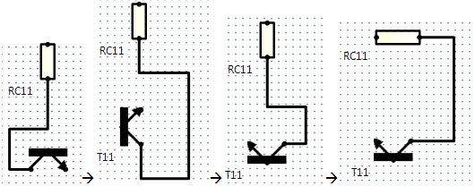
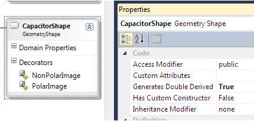

Visualization & Modeling SDK - Circuit Diagrams. Extensive DSL customization.
This is a sample of a domain-specific language defined by using Visualization and Modeling SDK (DSL Tools). It demonstrates how to program: commands, drag and drop, cut and paste, events, shape alignment, composite elements, validation, and embedding a diagram in a Windows Form. The user can draw simple electronic circuit diagrams.

Discussion
Please post suggestions and questions on the Visualization and Modeling SDK Forum.
What it demonstrates
This sample demonstrates how to customize several aspects of your domain-specific language (DSL):
- Copy, cut and paste, preserving relative shape positions
- Drag and drop handler
- Embed diagram in a Windows Form in Visual Studio
- Couple model to external form by using Events
- Drop tool on element
- Text wrapping
- Dynamic images using custom image fields and decorators
- Shape alignment command
- Composite elements
- Transistor shapes have four elements: the main body, and the three terminals
- The Transistor tool is customized to create a group of four elements
- The terminal shapes are fixed in position using Bounds Rules
- Selection is constrained to include the whole transistor, even if a terminal is clicked
- Validation invoked by program code
- Menu commands and double-click
Please note that the sample is not intended as a working application. It has not been thoroughly tested.
See also VMSDK Introductory Lab.
Embedding in a Windows Form
The diagram is embedded in a Windows Form, which also contains a button and a list.
The form is defined in DslPackage\WrappingForm.cs. It provides a Panel in which the DSL diagram is inserted.
In CoupleFormToModel.cs, we override DocData.Window to place the form between the DSL view and its usual Visual Studio container:
public override System.Windows.Forms.IWin32Window Window { get { if (container == null) { // Put our own form inside the DSL window: container = new WrappingForm(this, (System.Windows.Forms.Control)base.Window); } return container; } } private WrappingForm container;
public override System.Windows.Forms.IWin32Window Window { get { if (container == null) { // Put our own form inside the DSL window: container = new WrappingForm(this, (System.Windows.Forms.Control)base.Window); } return container; } } private WrappingForm container;
The constructor we’ve added to WrappingForm.cs inserts the DSL into the panel:
The constructor we’ve added to WrappingForm.cs inserts the DSL into the panel:
internal WrappingForm(CircuitsDocView docView, Control content)
: this()
{
DiagramPanel.Controls.Add(content);
this.docView = docView;
}
internal WrappingForm(CircuitsDocView docView, Control content) : this() { DiagramPanel.Controls.Add(content); this.docView = docView; }
Updating the Form by using Store Events
Notice that the form contains a parts list, which is updated whenever items are added to or deleted from the diagram.
Store events are the standard method of keeping anything outside the store synchronized with changes inside the store. There are different kinds of store events – fired for example when a property changes, when an element or link is added, or removed.
To register a Store event, we need to update the Store’s EventManagerDirectory. We have to do this before any user changes happen, but after the model has been properly loaded. There are two methods we could override that are called at the right time: DocData.OnDocumentLoaded() and DocView.LoadView(). In this case, it is slightly more convenient to use the latter.
Composite Elements
The electronic components are each composed of several elements – a main element and two or three elements that represent named terminals. These terminals appear as fixed ports on the shapes. The prototype components are stored in the toolbox as groups of elements.

(Compare this with the example in the component diagram solution template. In that DSL, a component is created with just the main element. Then you add a variable number of ports, which can be moved around on the component’s surface.)
Groups of elements in the toolbox
Every element tool works by storing a serialized copy of the element that the tool should create. The prototype element is stored in an ElementGroupPrototype (EGP). The standard tools created by a DSL definition just contain one element, but in fact an EGP can hold any number of elements, with links in between them. (EGPs are also used to store elements in the copy buffer.)
When the user drags a tool onto the diagram, or onto an element on the diagram, a process called ElementMerge is performed. This first checks whether the prototype in the tool can be linked into the target element; if so, a copy of the prototype is created, given a new ID and name, and linked into the tree with an embedding relationship. The “fixup” rules then fire to create a shape for the new element. (The same process happens when you paste or drag and drop an element.)
In a basic DSL without custom code, each element tool is initialized with a single element. This is done in Dsl\ToolboxHelper.cs, by CreateElementToolPrototype().
In the Circuit Diagrams DSL, in Dsl\Custom\CompositeElement.cs, we override CreateElementToolPrototype(). Each component tool is initialized with a group of elements: the main Component element; two or three ComponentTerminals; and ComponentHasComponentTerminal relationships between them. (These are all types defined in this DSL.)
Note: the toolbox contents are kept in a persistent cache. CreateElementPrototype() is therefore not called every time that Visual Studio starts. If you change the definition of the toolbox, or of this method, you need to refresh the cache. Reset the experimental instance of VS, and then rebuild the solution.
Fixed placement of terminal shapes
The ComponentTerminalShapes are the two or three small bumps on the edges of the components. They provide a fixed point on the perimeter of each component to which wires can be fixed.
BoundsRules are used to constrain the size and location of the terminal shapes. The BoundsRule is called when the shape is created, and on any attempt to move it. See ComponentTerminalBoundsRule in Dsl\Custom Code\CompositeElements.cs.
Rotating shapes
When you double-click a component, it rotates.
Rotate, flip and polarity.
Rotate a component by double-clicking. Notice that the terminals move with the rotation, and the wires remain connected to the correct terminal:

An integer domain property ComponentShape.rotate keeps the current state of rotation.
Rotation is done in ComponentShape.Rotate90 (in DynamicNodeImages.cs):
- · Rotate90 resets the AbsoluteBounds of the shape, swapping the width and the height.
- · It also increments the rotate domain property.
- · The terminal bounds rules depend on the value of the rotate property. You can see this for example in ResistorShape.GetTerminalLocation() (in DynamicNodeImages.cs).
- · The image field also depends on the rotate property.
Inserting a variable image field
In a DSL without code overrides, the image and text decorators that are specified in the DSL Definition are set up by InitializeShapeFields(), which you can see in the code for each shape in Dsl\Generated Code\Shapes.cs . For each image decorator, it adds an ImageField, which just displays the image.
For our own rotatable images, we would like to replace the ImageFields with instances of our own ImageField subclass. To do this, we must override InitializeShapeFields(), which can be done if we set Generates Double Derived on the properties of each component shape class in the DSL Definition.

In fact rotatable images are only required on TransisitorShape and CapacitorShape.
Image visibility dependent on a domain property
You can flip a component or reverse the polarity of a transistor by right-clicking:

This is achieved by providing the TransistorShape with two decorators, both in the center of the shape. The visibility of each image is made dependent on the Boolean domain property Polarity, which is inherited from Component.
This is done in the DSL Definition, without additional code.
Click the shape mapping between Transistor and TransistorShape, open the DSL Details window and click the Decorator Maps tab. Click on one of the image decorators, NPNImage or PNPImage. Notice that the Visibility Filter is set, with the Filter property set to Polarity. The Visibility Entries have opposite values for the two images.
Note: There is one field instance for each decorated location on a class of shape. There is not an instance per shape element. If your DSL defines two classes each of which has two fields, then at run time, there will be just four instances of Field. Therefore, methods in a field that depend on a particular shape instance must take the shape as a parameter.
Alignment
To align nodes:
1. Select two or more nodes that are already roughly aligned either vertically or horizontally.
2. Right-click and choose Align.

The code is in Dsl\Custom Code\ShapeAlignment.cs. It assigns values to the AbsoluteBounds of each shape.
The code that sets up the menu command is in DslPackage\Custom\Commands.cs, and the position of menu items on the menus is determined by DslPackage\Commands.vsct. For more information, see How to Define Menu Commands.
Copy or cut and paste preserving layout
You can copy a selection of nodes, and paste them at a chosen mouse position, without losing their relative positions and connections:
 Then paste:
Then paste:

To place the group in a specific position, right-click where you want the top left to be, then click Paste. (If you use ctrl-V, the group will appear adjacent to the current selection.)
The code is in DslPackage\Custom\Commands.cs, in OnMenuCut, OnMenuCopy, OnMenuPaste.
The OnMenuCopy creates an ElementGroup that contains the model elements. From this, an ElementGroupPrototype (EGP) is produced and serialized onto the global paste buffer. (EGPs were also discussed in the context of the toolbox, where each element tool keeps an EGP.)
An interesting property of ElementGroup is that when you add a model element, it automatically adds any relationship links between the new element and the elements that were already in the group. It is therefore not necessary to add the links explicitly.
We also add the shapes of the component methods. It is not strictly necessary to do this. If we do not provide the shapes, the paste method will automatically “fix up” the diagram by creating new shapes for the pasted model elements. However, by providing a shape, we allow the paste method to recreate the relative positions of the shapes, as well as their properties such as state of rotation. We don’t bother with the component terminal shapes – new ones can be recreated by paste, and the bounds rules will fix their positions. We don’t need to specify which component shapes go with each component element, because the PresentationViewsSubject links will automatically be added to the group.
OnMenuPaste merges the paste buffer contents into the model. It uses a utility method DesignSurfaceElementOperations.Merge(). This method takes the diagram (rather than the model) as one of its parameters, because it attempts to replicate the original layout of the shapes, relative to a point that we can specify. If the user calls paste by right-clicking, we use the mouse pointer; otherwise, we put the new shapes next to any selected shapes; or underneath existing shapes.
You can also copy by drag and CTRL+drop.
Wrapped Text Decorator
If you type a long line into a Comment, the text wraps inside the comment shape, once you have finished typing:

To do this, we set various properties of the text field. The code generated from your DSL Definition sets this in CommentBoxShape.InitializeDecorators(). By setting the Generates Double Derived property of CommentBoxShape, we can override this method. The code is in Dsl\CustomCode\WrappedCommentText.cs
The code lets the base method set up the fields, and then finds the text field and adjusts its settings. These demonstrate anchoring.
Customizing how a new element is merged
You can drag from the Comment tool onto any component on the diagram. This creates both a comment and a link from the new comment to the target component. This is done in the DSL Definition, without additional code.
In the DSL Explorer, look under Domain Classes\Component\Element Merge Directives. There is a directive that allows a Component to accept a Comment. Select that EMD and look in the DSL Details window:

This specifies that when a Comment is merged onto a Component, a link is created from the ComponentModel to the Comment; and that a link is also created from the Component to the Comment. For more information, see Domain Path syntax.
Related Sample
Change History
2011-03-22: Avoid copying presentation elements such as labels, which have no model elements.
Thanks to
Joeul on VMSDK Forum.
2010-08-01: Published on VSMSDK Code Gallery.
2007 : Used in
DSL Tools book.